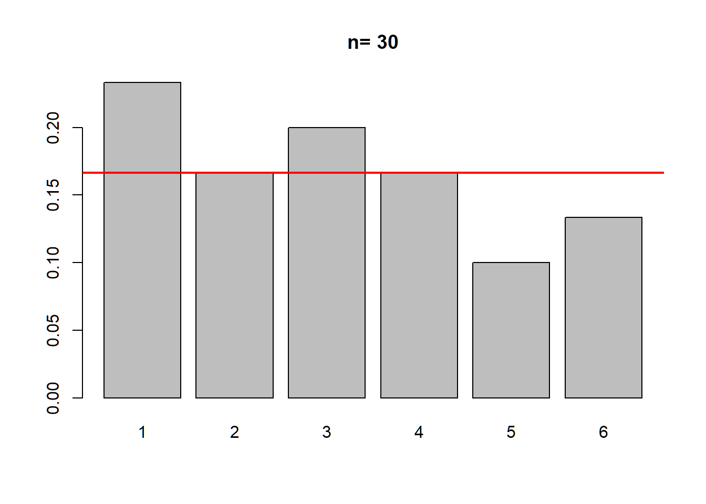
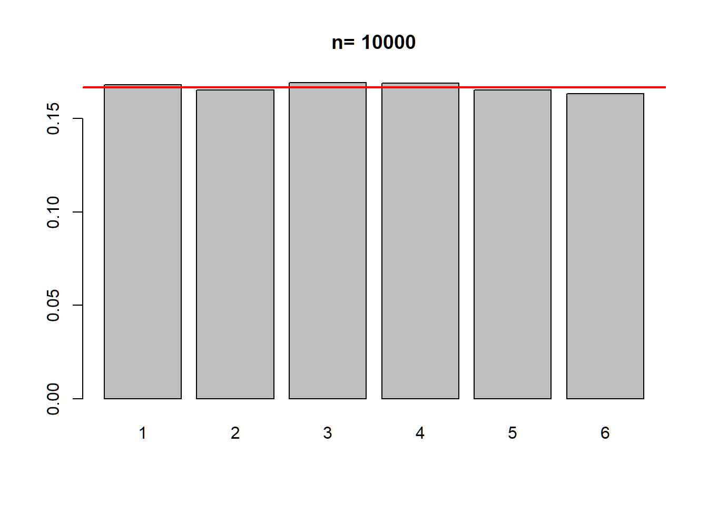

Simulación de la Ley de los Grandes Números
Objetivo: Comprender cómo el comportamiento de un experimento aleatorio (lanzar un dado) converge hacia su probabilidad teórica a medida que aumenta el número de repeticiones.
Enunciado: Desarrollar una función para simular un experimento aleatorio y observar, mediante la visualización de datos, cómo la frecuencia experimental converge hacia la probabilidad teórica (Ley de los Grandes Números).
Instrucciones:
dado(n) que reciba como
argumento n (el número de lanzamientos) y realice los
siguientes pasos:Defina el espacio muestral del dado (1 al
6).
Genere una muestra aleatoria de tamaño n con
reemplazamiento utilizando el comando sample().
Calcule la tabla de frecuencias relativas dividiendo el conteo de
cada resultado entre n.
Represente los resultados mediante un gráfico de barras
(barplot).
Añada una línea horizontal de referencia en el valor \(1/6\) (la probabilidad teórica de cada
cara) usando el comando abline().
Devuelva los resultados redondeados a 3 decimales.
n = 30 lanzamientos.n = 10,000 lanzamientos.```{r dado-function}
dado <- function(n) {
resultados = seq(1, 6) # 1. Definimos las 6 caras del dado
lanzamientos = sample(resultados, n, rep=T) # 2. Simulamos 'n' lanzamientos (con reemplazo)
frecuencias = table(lanzamientos) / n # 3. Calculamos la proporción de cada cara
barplot(frecuencias, main=paste("n=", n)) # 4. Graficamos las frecuencias en barras
abline(h=1/6, col="red", lwd=2) # 5. Dibujamos la línea de probabilidad teórica (1/6)
return(round(frecuencias, 3)) # 6. Devolvemos los resultados redondeados a 3 decimales
}
## lanzamientos
## 1 2 3 4 5 6
## 0.233 0.167 0.200 0.167 0.100 0.133
## lanzamientos
## 1 2 3 4 5 6
## 0.168 0.165 0.169 0.169 0.165 0.163¡Claro! Esta función es un ejemplo excelente para entender cómo R
maneja la simulación de experimentos aleatorios. Vamos
a desglosar qué ocurre dentro de tu función dado(n) paso a
paso:
resultados = seq(1, 6)¿Qué hace?: Crea un vector con los números del 1
al 6: [1, 2, 3, 4, 5, 6].
Propósito: Define el “espacio muestral” de un dado de seis caras.
lanzamientos = sample(resultados, n, rep = T)¿Qué hace?: Toma el vector
resultados y elige al azar un valor n
veces.
El detalle clave (rep = T o
replace = TRUE): Significa “con reemplazo”. Es
fundamental porque, al lanzar un dado real, sacar un “1” no impide que
en el siguiente lanzamiento vuelva a salir un “1”. Si no pusiéramos
esto, R borraría cada número después de usarlo, lo cual es incorrecto
para un dado.
frecuencias = table(lanzamientos) / ntable(lanzamientos): Cuenta cuántas
veces apareció cada cara (el 1, el 2, etc.). Devuelve las
frecuencias absolutas.
/ n: Al dividir cada conteo por el
total de lanzamientos (n), obtenemos las
frecuencias relativas (la proporción de veces que salió
cada cara, un número entre 0 y 1).
barplot(frecuencias, main = paste("n =", n))¿Qué hace?: Genera el gráfico de barras.
main = paste("n =", n): Usa la
función paste para crear un título dinámico. Si llamas a
dado(30), el título será "n= 30"; si llamas a
dado(10000), será "n= 10000".
abline(h = 1/6, col = "red", lwd = 2)¿Qué hace?: Dibuja una línea horizontal
(h) en el gráfico.
1/6: Es la probabilidad teórica
exacta de cada cara.
col = "red" y lwd = 2:
Le pone color rojo y un grosor de línea de 2 para que destaque. Esta
línea nos sirve de “referencia de control” para ver qué tanto se desvían
nuestros resultados aleatorios de la realidad teórica.
return(round(frecuencias, 3))round(..., 3): Redondea los
resultados a 3 decimales para que sean más legibles.
return(...): Envía el resultado
final (la tabla de frecuencias) de vuelta a la consola para que puedas
verlo después de ejecutar la función.
“Esta función simula la realidad física de un dado mediante muestreo aleatorio. Al comparar la altura de las barras (resultados reales) con la línea roja (probabilidad teórica), observamos visualmente cómo, a mayor número de intentos, la aleatoriedad se ajusta a la matemática.”